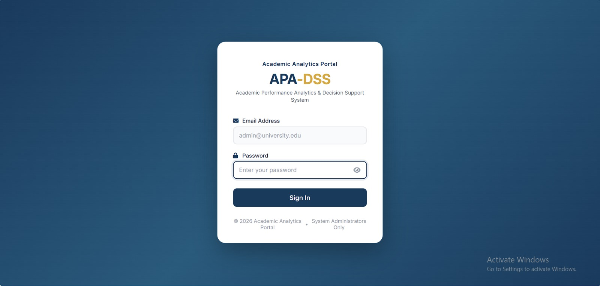
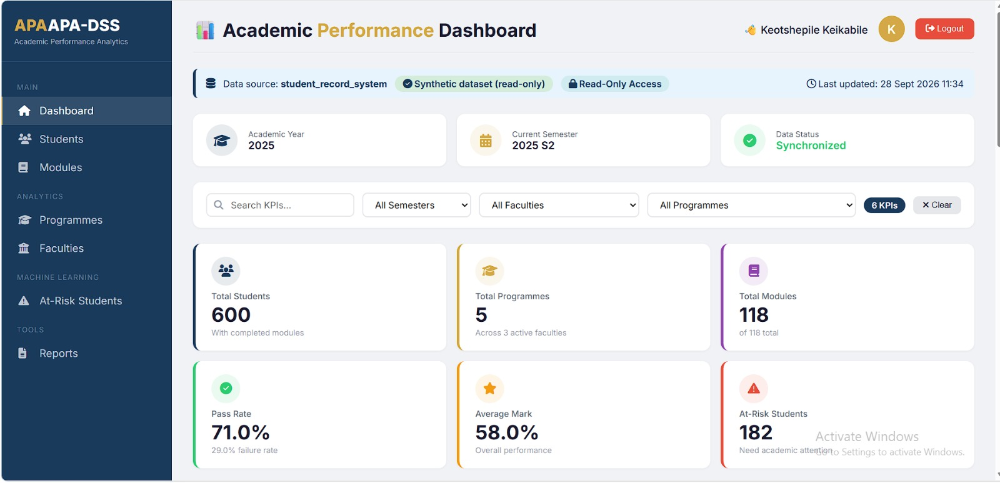
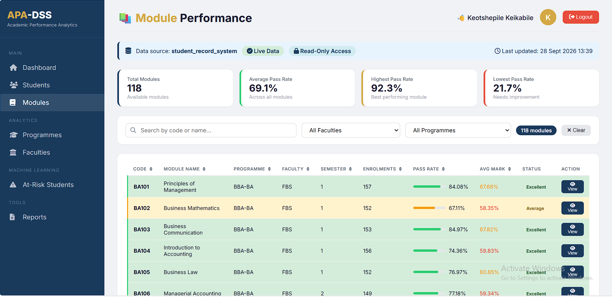
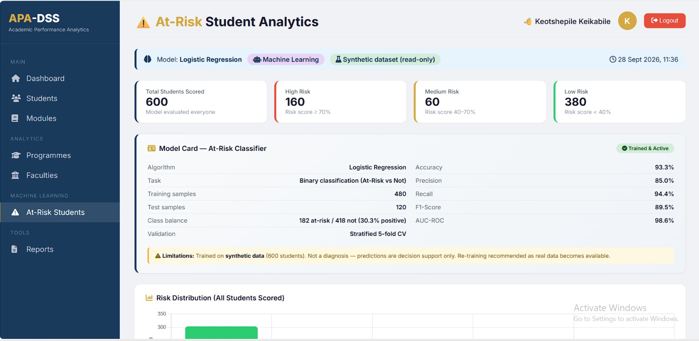
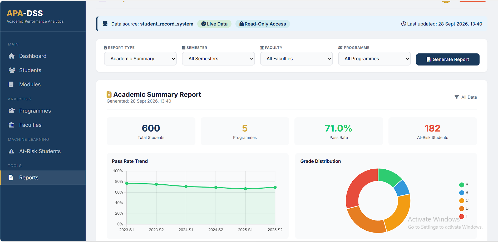

What is APA-DSS?
APA-DSS is a web application designed to analyse academic performance data stored in a Student Record Management System (SRMS).
The system combines:
SQL Analytics
Aggregations, trends, and cohort analysis over read-only academic records.
Interactive Dashboards
KPIs, charts, and drill-downs rendered with Chart.js.
Student Analytics
Per-student academic history, marks, and risk indicators.
Module Analytics
Module-level performance, difficulty indices, and distributions.
Reports
CSV export and print/PDF for academic review meetings.
Machine Learning
An interpretable classification pipeline for students associated with recent academic risk.
Administrator Access
Session-based login restricted to existing SRMS administrators.
Read-Only Design
Dedicated read-only database account — analytics cannot modify source records.
The core idea in one diagram
The Problem
Academic records contain valuable information, but raw records do not immediately show:
- Which modules have low pass rates?
- How is student performance changing over time?
- Which students may require closer academic review?
- How are programmes performing relative to each other?
- What patterns exist across semesters and cohorts?
What the System Does
Dashboard
Academic performance overview:
- Total students
- Module statistics
- Pass rates
- Performance trends
- Programme summaries
Student Analytics
Per-student drill-down:
- Academic history
- Module performance
- Marks & grades
- Performance trends
- Class rank within programme
Module Analytics
Module-level insight:
- Pass / fail rates
- Average marks
- Grade distributions
- Difficulty index
Machine Learning
A Logistic Regression classification pipeline for identifying students associated with recent academic risk. Each flag is explainable — advisors see why.
System Workflow
Application data flow
Request Path
ML Path
The four-layer architecture
APA-DSS is structured as four clear layers. Each one has a single responsibility, which makes the system easier to reason about, debug, and extend.
| Layer | Technology | Responsibility |
|---|---|---|
| Presentation | HTML · CSS · JS · Chart.js | Render dashboards, tables, modals, and reports |
| Application | Node.js · Express | REST API · sessions · orchestration |
| Data | MySQL 8 (read-only) | Source of truth for academic records |
| ML | Python · scikit-learn | Feature engineering · training · scoring |
A full technical diagram of this architecture is in the Technical Architecture section below.
Explore the System
Each screen below shows a working part of APA-DSS as it ran during development. Each screenshot is annotated with its purpose and what it demonstrates.

Login
The entry point to APA-DSS. Only existing SRMS administrators can authenticate — there is no public sign-up.
Purpose
Authenticates authorised system administrators.
What it demonstrates
- Session-based authentication
- Server-side validation
- Database integration with the
adminstable - Protected routes (redirect when unauthenticated)

Dashboard
The primary decision-support view: six headline KPIs, GPA trend, academic progression, top/bottom modules, failure hotspots, and at-risk alerts.
Purpose
Provides an overview of academic performance at a glance.
Key information
- Student population & module counts
- Overall pass rate & average mark
- Performance trends across semesters
- Progression breakdown (Proceed / Repeat / At-Risk / Excluded)

Student Analytics
A searchable, sortable list of students with filters for programme, faculty, semester, and year level.
Purpose
Locate and filter individual student records for review.
What it demonstrates
- Server-side filtering
- Sortable tables via SQL
- Drill-down navigation
Student Details
A drill-down modal showing a single student's academic history, class rank within programme, and comparison against programme and university averages.
Purpose
Support advisor reviews of an individual student's academic trajectory.
What it demonstrates
- Marks history chart
- Programme rank (via SQL window functions)
- Failed modules list
- Comparative analytics

Module Analytics
A module-level drill-down: rank within programme, difficulty index, pass-rate trend, mark distribution histogram, and bottom-5 performing students.
Purpose
Help module coordinators identify structurally difficult modules.
What it demonstrates
- Multi-table joins & aggregations
- Histogram computation
- Percentile-style ranking

At-Risk ML
Every student scored by the Logistic Regression pipeline, with per-student top contributing features shown in plain language.
What you can see
- Student identifier
- Risk probability
- Project-defined risk band
- Contributing features
Why it matters
Demonstrates how a trained classification model can be integrated into a web-based academic analytics system — with explainability preserved at the point of decision.

Reports
Five pre-built report types — Academic Summary, Module, Programme, Student, and At-Risk — each exportable as CSV or printable as PDF.
Purpose
Turn analytics into documentation for academic review meetings.
What it demonstrates
- Server-generated reports
- CSV generation
- Browser print stylesheet support
System Journey
A typical usage flow — click any step to jump back to its screenshot.
Data & Database
APA-DSS connects to an existing MySQL Student Record Management System. It does not maintain its own copy of academic records — the database is the single source of truth.
Main tables used
| Table | Purpose |
|---|---|
students | Student identity, programme, year enrolled, status |
modules | Module metadata, credit hours, year level |
student_enrollments | Links students to modules, records marks and grades |
programmes | Programme metadata |
faculties | Faculty metadata |
semesters | Academic year and semester definitions |
admins | Administrator credentials (for APA-DSS login) |
Simplified relationship diagram
READ-ONLY BY DESIGN
APA-DSS uses a dedicated read-only database account (apa_dss_user) with
SELECT-only privileges. Analytics queries cannot modify the underlying
student-record data.
📖 Full database documentation, schema details, and SQL query set: docs/TECHNICAL.md → §2
Machine Learning Pipeline
METHODOLOGICAL SCOPE — READ FIRST
The current target is constructed from recent-semester academic performance. Because some recent-semester features are also used as predictors, this implementation is a demonstration of an interpretable classification pipeline and its integration into a decision-support system — not a validated future-risk prediction model. A production early-warning model requires strict temporal separation between predictor data and future outcomes.
The ML pipeline in one diagram
Model metrics (test set: 120 held-out students)
Top contributing features
| Feature | Coefficient | Direction |
|---|---|---|
avg_mark_last_sem | −4.17 | ↓ associated with lower risk |
failure_rate | +1.83 | ↑ associated with higher risk |
avg_mark | +1.23 | ↑ associated with higher risk |
year_level | +1.12 | ↑ associated with higher risk |
num_modules | −1.07 | ↓ associated with lower risk |
num_failed | +0.98 | ↑ associated with higher risk |
CRITICAL LIMITATIONS
Synthetic training data — metrics validate implementation, not real-world prediction quality. No strict temporal separation — the target uses recent performance that also appears as features. Uncalibrated probabilities — sigmoid output was not validated against observed outcomes. Project-defined risk bands — HIGH / AT_RISK / MONITOR / ON_TRACK are UI labels, not statistically validated cut-offs.
📖 Full ML methodology, feature engineering, and pipeline code: docs/TECHNICAL.md → §6
Technical Architecture
APA-DSS follows a layered, read-only architecture. Each layer has one job and communicates with adjacent layers only.
| Layer | Technology | Notes |
|---|---|---|
| Frontend | HTML · CSS · JavaScript · Chart.js | Dashboards, tables, modals, reports |
| Backend | Node.js · Express · REST API · Sessions | Routing, auth, orchestration, DB access |
| Database | MySQL 8 · mysql2 · read-only account |
Source of truth for all academic records |
| ML | Python · pandas · NumPy · scikit-learn · joblib | Feature engineering, training, scoring |
A full architecture diagram, design decisions, and trade-offs are documented in docs/TECHNICAL.md → §1.
📖 Read full technical documentation: docs/TECHNICAL.md
Security & Responsible Use
Authentication
Session-based administrator authentication. No public sign-up.
Database Protection
Read-only database account — analytics cannot modify source records.
SQL Injection Protection
Parameterised queries / prepared statements throughout the API.
Human Oversight
ML output is decision-support information — it does not automatically determine academic interventions.
Privacy
Designed around privacy considerations for sensitive academic information.
Auditability
Every analytics query runs through a dedicated, least-privilege DB user.
Prototype limitations
- Local database only — not reachable remotely without hosting
- No production deployment
- No persistent production session store
- No rate limiting on authentication
- Password handling inherited from the existing SMS authentication system
- ML requires further validation before operational use
Limitations
Data
- Synthetic training data — metrics validate implementation, not real-world quality.
- No institutional validation — historical data would be required.
- Local database — the MySQL instance runs on the developer machine.
Model
- No strict temporal separation — the target uses recent-semester performance that also appears as features.
- Small training set — 600 students limits model complexity.
- Binary target — the 50%-failure rule is a simplification.
- Uncalibrated probabilities — sigmoid output was not calibrated against observed outcomes.
- Project-defined risk bands — HIGH / AT_RISK / MONITOR / ON_TRACK are UI labels.
Security
- Password handling inherited from the existing SMS.
- No rate limiting on authentication endpoints.
- No CSRF protection on state-changing endpoints.
Deployment
- Not deployed institutionally.
- Requires hosted DB, HTTPS, hardened auth, audit logging, and POPIA / data-protection review before production use.
System Demonstration
A short screen recording showing the working system end-to-end — from login to report generation. Useful when the live system cannot be run on the viewer's machine.
video/demonstration.mp4What the demo covers
TO ENABLE THE VIDEO
Save your recording to docs/video/demonstration.mp4, then replace the
<div class="demo-video"> block above with a
<video controls> element pointing to that file.
Project Evidence
This project is not only a report — it is evidence of specific, demonstrable skills.
Where to find each piece
Documentation Links
Three tiers of documentation, each written for a different reader.